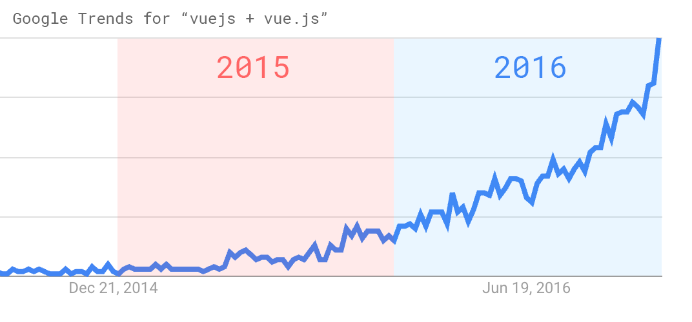

Tu primer contacto con Vue.js
WordCamp Bilbao, 2017
netzstrategen - http://netzstrategen.com
Julià Mestieri - @julimestieri
Lo primero es hacerlo possible
Gracias a
Voluntarios
Patrocinadores
Índice
- Presentación
- Quién es Vue.js
- Show me the code!
- Algo más sobre plantillaje
- Un ejemplo práctico en WordPress
Presentación
Julià Mestieri
I'm web developer at netzstrategen
I like free software and its community, vim and whatever with PHP and a lot of data :D @julimestierinetzstrategen
We cover your digital shift.
Desarrollamos y asesoramos en SEO, analítica, performance, social media y mucho más!
Desarrollamos código y lo devolvemos a la comunidad.
+ info netzstrategen.com - @netzstrategen_ennetzstrategen
...por cierto! buscamos desarrolladores!
escribe a jobs@netzstrategen.com y únete al equipo!Quién es Vue.js
pronounced /vjuː/, like view
Es una de las herramientas más populares entre desarrolladores
Con >52K de stars github está cerca de grandes proyectos como angular (55k) o react (66k) ~2M descargas en npm >21M de visitas a su página y >350K usuarios activos por mes... y el Google trends no deja lugar a duda :)
Vue.js es...
Un framework javascript:
- - Progresivo
- - Para desarrollar interfaces
- - Integrable
- - Ligero (28.03kb min+gzip)
- - Rápido, muy muy rápido
Algunas peculiaridades
- - Funciona con su "Virtual DOM"
- - Tiene un potente ecosistema de componentes y plugins
- - Se usa para construir potentes apps, pero el core no tiene las funciones básicas para ello
- - No está desarrollado por una gran empresa como Facebook o Google
- - Tiene sus propias "Vue Devtools" para los desarrolladores
Encontramos Vue.js en proyectos de muchos tipos: desde sites y aplicaciones a experiencias interactivas.
Algunos ejemplos:
- Euronews
- Gramarly
- Gitlab
- Facebook news Feed
- Youtube AdBlitz 2016
Librerías con soporte oficial:
- vue-route: Añade la possibilidad de manejar rutas.
- vuex: Permite manejar estados, define el modelo cíclico vista-acción-estado y implementa la API
- vue-loader: Permite escribir nuestros templates en otros formatos
- veutify: Es una librería de componentes "para hacer cosas bonitas rápido"
No podemos olvidar tampoco el vue-cli que nos ayudará mucho a agilizar el desarrollo
Para más info: vuejs.org y Awesome vuejs

really nice, but...
...show me the code!
Vuejs: el objeto
var app = new Vue({
el: '#app',
data: {
message: 'Hello WordCamp!'
}
})
Vuejs: el template
<div id="app">
{{ message }}
</div>
- La idea que hay que retener -
Cada objeto tiene su data que renderizamos desde el template.
Una vez definido el template e instanciado el objeto sólo alteramos los valores al objeto y Vue.js hace el resto por nosotros
Las directivas en vuejs van prefijadas con 'v-'. Asi tenemos:
- v-if
- v-for
- v-on:{event}
- v-bind:{attribute}
- ...
- Nos vamos a centrar en v-if y v-for que son las que usaremos en nuestro ejemplo
Un ejemplo de v-if y v-else
<div v-if="Math.random() > 0.5">
Now you see me
</div>
<div v-else>
Now you don't
</div>
Y un ejemplo de v-for
<ul id="example-1">
<li v-for="item in items">
{{ item.message }}
</li>
</ul>
var example1 = new Vue({
el: '#example-1',
data: {
items: [
{ message: 'Foo' },
{ message: 'Bar' }
]
}
})
...y juntos en acción!
<li v-for="todo in todos" v-if="!todo.isComplete">
{{ todo.taskDescription }}
</li>
var example1 = new Vue({
el: '#example-1',
data: {
todos: [
{
taskDescription: 'Preparar la presentación sobre Vue.js',
isComplete: true
},
{
taskDescription: 'Comprar la leche',
isComplete: false
}
]
}
})
Algo más sobre plantillaje
Componentes
Los componentes reusables son una de las grandes potencias de Vue.js
No sólo permiten reusar código, también son los responsables de manejar parte de la lógica de nuestra aplicación
Un componente tiene esa pinta:
<div id="example">
<wordcamp-component></wordcamp-component>
</div>
// register the component
Vue.component('wordcamp-component', {
template: '<div>The WordCamp Biblbao rocks!</div>'
})
// create a root instance
new Vue({
el: '#example'
})
En nuestro ejemplo vamos a usar los componentes de veutify
Las opciones y potencialidades de los componentes son muy grandes, podéis empezar por la documentación oficial
Nuestro ejemplo
Vamos a crear una página en la administración de wordPress con un pequeño panel de estadísticas sobre nuestros productos de woocommerce
Podeis seguir el ejemplo en:https://github.com/juliquiron/wordpress-vuejs-demo-dashboard
Quick start
$ npm install vuetify --save-dev
$ yarn add vuetify --dev
$ vue init vuetifyjs/simple
$ chrome index.html
Crear una sección de administración
add_action('admin_menu', __NAMESPACE__ . '\Admin::admin_menu');
add_submenu_page( string $parent_slug, string $page_title, string $menu_title, string $capability, string $menu_slug, callable $function = '' )
/**
* Creates the menu for this plugin.
*
* @implements admin_menu
*/
static public function admin_menu() {
add_submenu_page(
self::$parentAdminMenu,
__('VueDashboard', 'vuejsDemo'),
__('VueDashboard', 'vuejsDemo'),
'manage_options',
'vuejsDemo',
__CLASS__ . '::renderDashboard'
);
}
:wq
Preguntas?